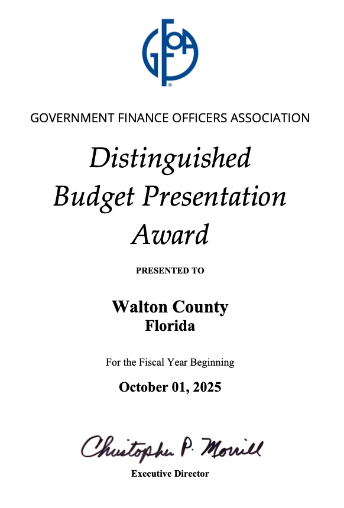
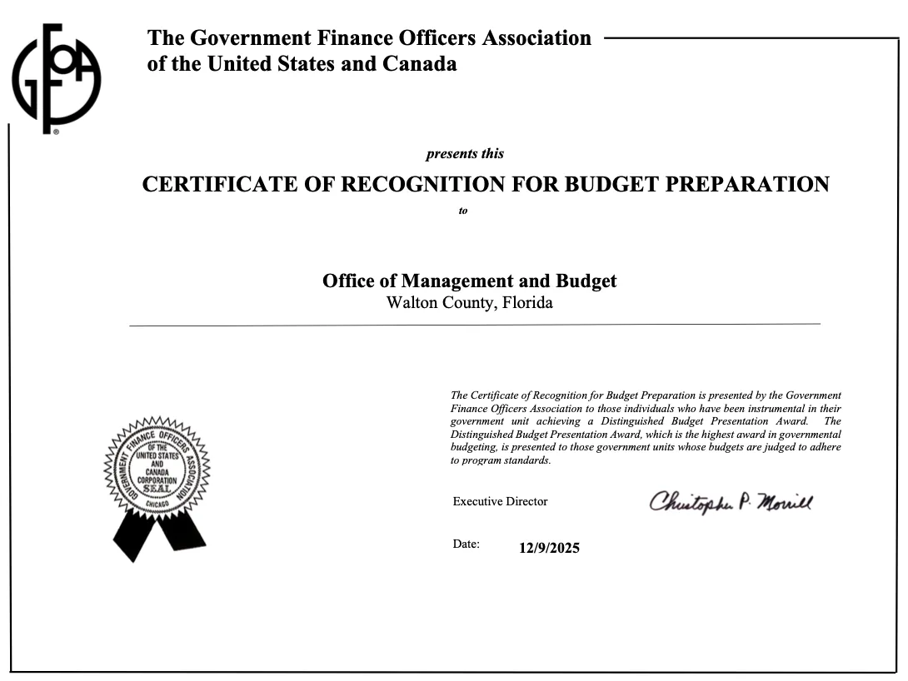

Explains goals, priorities, and major decisions that guide how public resources are allocated.
Distinguished Budget Presentation Award
The Government Finance Officers Association of the United States and Canada presented a Distinguished Budget Presentation Award to Walton County, Florida for its Annual Budget for the fiscal year beginning October 1, 2025.
To receive this award, a government must publish a budget document that meets program criteria as a policy document, a financial plan, an operations guide, and a communications device.
This award is valid for one year. Walton County believes the current budget continues to conform to program requirements and is submitting it to GFOA to determine eligibility for another award.
Two-Time Recipient
FY 2027 Final Budget

Four roles of an effective budget document.
GFOA evaluates whether a budget document helps residents, policymakers, and staff understand the government’s priorities, resources, services, and financial direction.
Shows revenue, expenditures, fund structure, and the financial resources needed to deliver services.
Connects departments, staffing, capital projects, and service delivery to the adopted financial plan.
Presents budget information in a format that is understandable, transparent, and useful to the public.

Walton County recognition